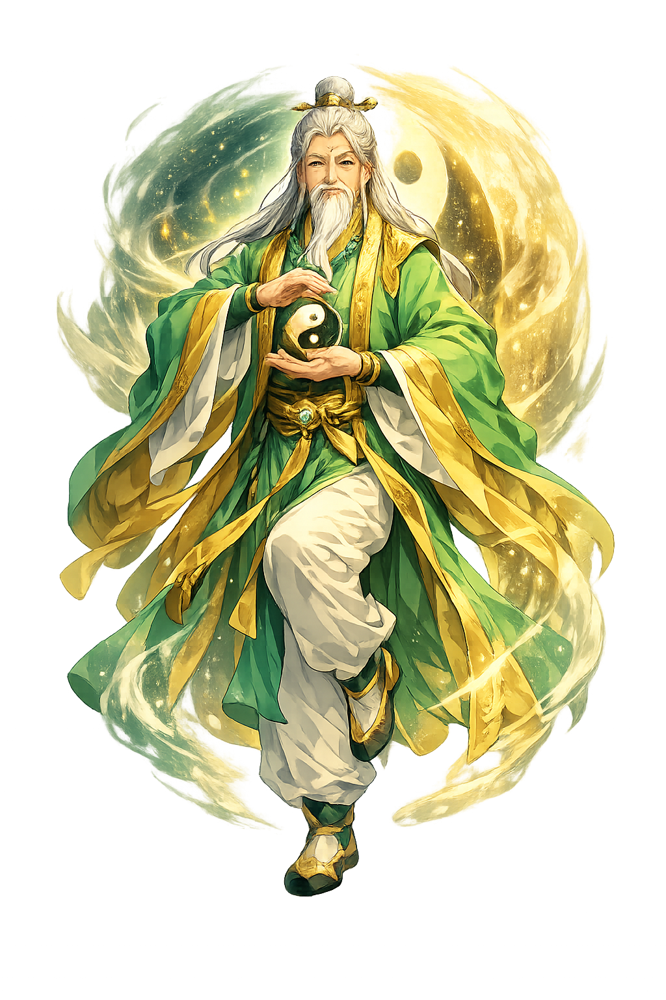

Ancient Domain
Hē is the Ancient Greek feminine article, later reinterpreted by philosophers as a name for the feminine principle of being. It is the grammatical 'she' that becomes, in Neoplatonic and esoteric thought, the counterpart to the One.
Extended Lore
Etymology · Phonology · Orthography · Cultural Legacy · Primary Sources

Essential information about Hē, The Divine Feminine Principle, She Who Is
From original script to Unicode restoration
Hē is Tier 2 because the Greek ἡ preserves the long vowel (eta) but is a grammatical particle, not a stressed lexical word in ordinary syntax. Its theological reinterpretation comes from later Platonism, which treated the article as a metaphysical principle.
Character-by-character philological analysis
| Character | Unicode | Name | Block | Phonetic Role |
|---|---|---|---|---|
| H | U+0048 | Latin Capital Letter H | Basic Latin | Same, capitalized |
| ē | U+0113 | Latin Small Letter E with Macron | Latin Extended-A | Macron marks long e |
The Tier 2 classification reflects which ancient features stress, length, or script are preserved in this restoration.
From ancient cult to modern Unicode
Hē is the Ancient Greek feminine article, later reinterpreted by philosophers as a name for the feminine principle of being. It is the grammatical 'she' that becomes, in Neoplatonic and esoteric thought, the counterpart to the One.
Hē as a theological principle resonates with many traditions: the Chinese yin, the Indian prakṛti, the Gnostic Sophia, and the Jewish Shekhinah all name a feminine receptive power. Within Greek thought it overlaps with Gē/Gaia as earth-mother and with the Platonic hupodochē. The PUNICODEX entry treats ἡ as a philosophical personification rather than a traditional deity, making it unique among the flagship entries.
Hē is the smallest flagship in the PUNICODEX pantheon: two letters, one syllable, infinite interpretive weight. It reminds us that language itself can become sacred, and that grammar carries gendered philosophy. In modern gender discourse, the feminine article's elevation to a divine name can be read as an affirmation of feminine principle — or as a caution that abstraction is not the same as personhood.
Restoring Hē in a domain name is more than orthographic accuracy. It is a statement that the internet should recognize the full range of human writing — not only the ASCII keyboard.
Common questions about Hē, The Divine Feminine Principle, She Who Is, and Unicode restoration
In reconstructed pronunciation, Hē is /hɛː/ — approximately 'HAY' — one long syllable, beginning with a soft 'h' and drawn out like a breath..
Hē means Feminine nominative singular article in Ancient Greek; in Orphic and Neoplatonic thought, the receptacle of divine overflow and counterpart to τὸ ἕν (Hén). in the greek tradition.
Hē is associated with The letter eta (Η) (The long vowel that carries the feminine article and the name), Vessel or cup (The receptacle that receives and holds form), Mirror (The reflecting surface in which the One becomes visible as many), Open door (Manifestation as the threshold through which being enters appearance).
Each is a historically defensible restoration. hē.com is the owned form: Lowercase owned domain form.
Plain ASCII he strips the stress, length, and script that make the name specific. Unicode restoration returns the name to its original written dignity.
Plato calls the principle of matter the hupodochē, the 'receptacle' of all becoming. It receives forms the way a mother receives seed. Later readers — especially Neoplatonists and Renaissance mystics — identified this receptive principle with the feminine and, by extension, with the word ἡ.
The philological foundations of this restoration
Every claim on this page is grounded in established scholarship. The orthographic restorations follow disciplinary convention. The etymological chain follows the best available reference works. This is not invention — it is resurrection through scholarship.
You have traced the name from its earliest attestation to its Unicode restoration. Now return to the myth. The story is where the name lives.
Back to Lore